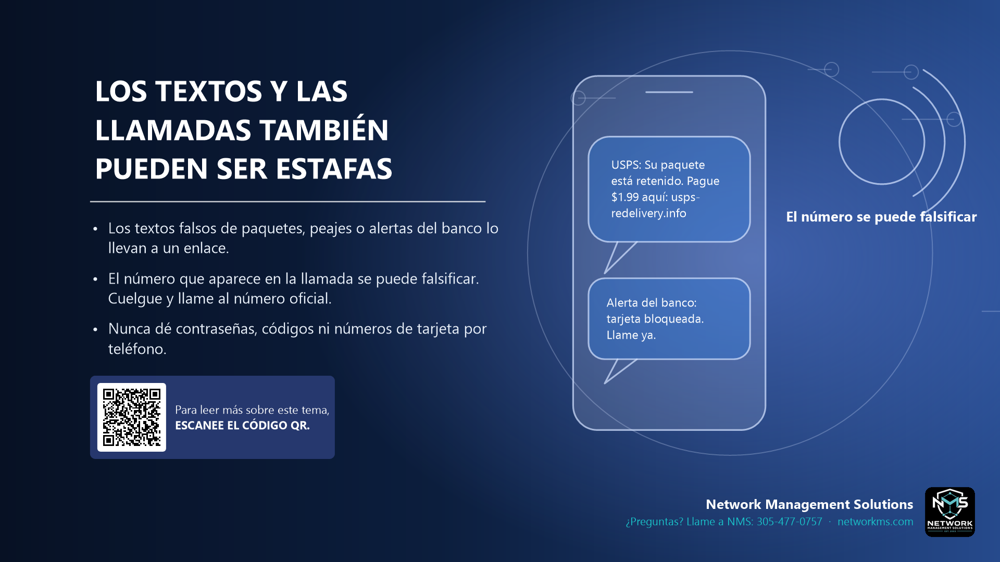

Los textos y las llamadas también pueden ser estafas

- Los textos falsos de paquetes, peajes o alertas del banco lo llevan a un enlace.
- El número que aparece en la llamada se puede falsificar. Cuelgue y llame al número oficial.
- Nunca dé contraseñas, códigos ni números de tarjeta por teléfono.
El smishing (phishing por SMS) y el vishing (por llamada) usan los mismos trucos que el correo: urgencia y un enlace o un número para llamar.
Ejemplos comunes: un paquete retenido, un peaje sin pagar, una tarjeta bloqueada, un reembolso, o "soporte de Microsoft" diciendo que su computadora tiene un virus.
No use el enlace ni el número del mensaje. Cuelgue y llame a la empresa al número de su sitio web oficial o al que está detrás de su tarjeta.
¿Tiene dudas sobre un correo, mensaje o llamada? Llame a NMS antes de hacer clic: 305-477-0757 · networkms.com